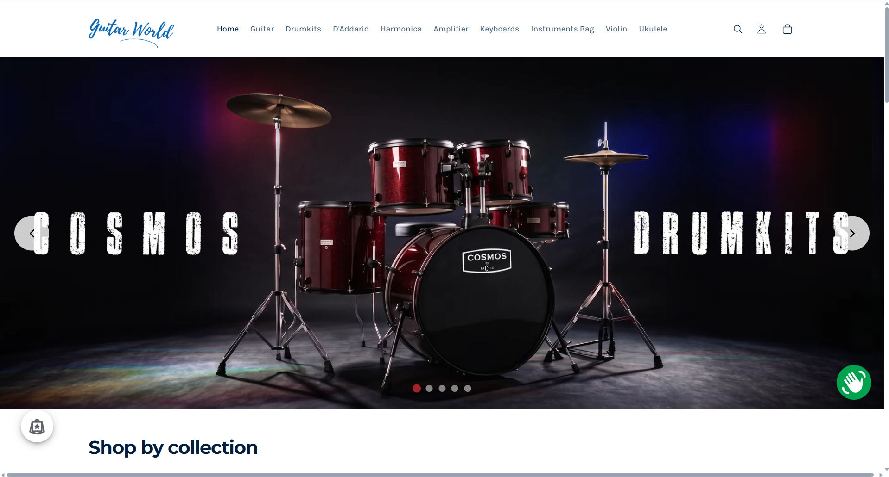
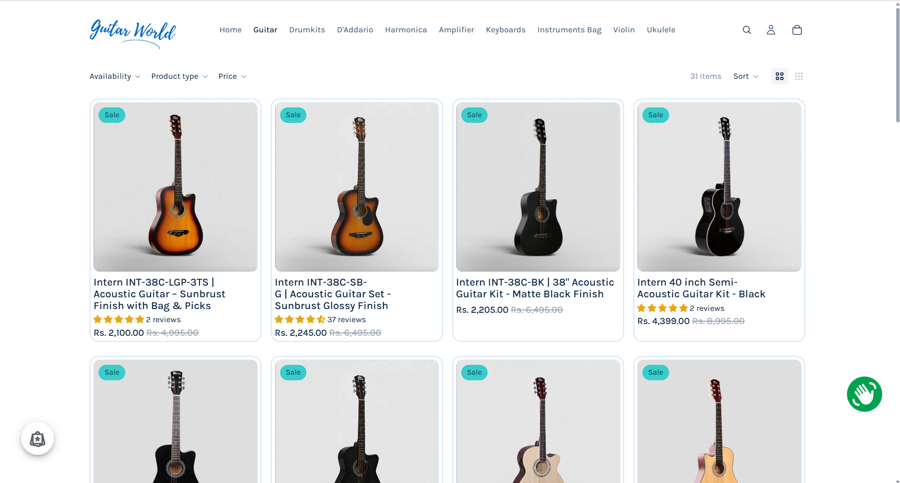
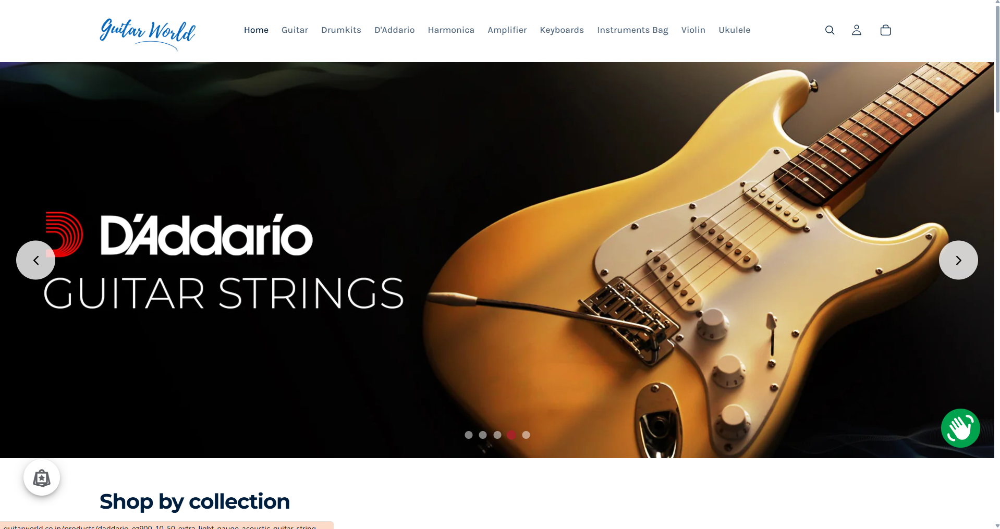

Project Overview

My internship at Guitar World Store (GWS) involved enhancing their existing Shopify e-commerce platform. The goal was to improve user experience, streamline the online shopping process, and implement custom features to better showcase their musical instruments and accessories.
Problem & Solution
The Challenge:
While Guitar World Store had an existing Shopify presence, there were opportunities to optimize the user interface, enhance the shopping journey, and introduce specific functionalities not readily available through standard Shopify themes. The aim was to create a more engaging and efficient online store for customers.
My Solution:
As an intern, I contributed to addressing these challenges by performing **UI/UX improvements** and making **custom template changes** through coding. This involved refining product display layouts, optimizing navigation, and integrating features that improved both the aesthetic appeal and functionality of the store, ensuring a smoother shopping experience for customers.
My Role & Contributions
As a **UI/UX and Frontend/Backend Intern** at Guitar World Store, my responsibilities focused on improving the e-commerce platform's user experience and implementing custom functionalities within the Shopify environment:
- UI/UX Design & Implementation:
- Analyzed existing user flows and identified areas for improvement in the online shopping journey.
- Designed and implemented enhancements to product pages, collection pages, and the checkout process, focusing on visual appeal and ease of use.
- Ensured responsiveness and cross-device compatibility for a consistent user experience.
- Shopify Template Development & Customization:
- Modified and extended Shopify Liquid templates to introduce custom sections, dynamic content blocks, and unique layout adjustments.
- Implemented custom CSS and JavaScript to create interactive elements and refine the visual design beyond standard theme capabilities.
- Collaborated on integrating third-party apps and custom scripts to enhance store functionality.
- Backend Configuration & Data Management:
- Assisted with product data management, ensuring accurate categorization, tagging, and display of inventory.
- Configured Shopify settings and apps to optimize store performance and administrative workflows.
- Participated in discussions regarding backend processes affecting frontend display and user interactions.
- Testing & Debugging:
- Conducted thorough testing of implemented features across different browsers and devices to identify and resolve issues.
- Performed debugging of template code and scripts to ensure seamless functionality and prevent conflicts.
Technologies Used
- Shopify Platform
- JavaScript (ES6+)
- HTML5 (Liquid Templating Language)
- CSS3 / SCSS
- Liquid (Shopify's Templating Language)
- Figma / Adobe XD (for UI/UX design, if used)
- Visual Studio Code (VS Code)
- Git & GitHub (for version control of theme files)
Challenges & Learnings
My internship at Guitar World Store provided significant insights into e-commerce development and the Shopify ecosystem:
- Shopify Liquid & Theme Structure: Gaining a deep understanding of Shopify's Liquid templating language and how themes are structured was crucial for effective customization. This involved learning to navigate and modify existing theme files without disrupting core functionality.
- Balancing Customization with Maintainability: A key challenge was implementing custom features while ensuring they were sustainable and wouldn't break with theme updates or future changes. This taught me the importance of modular code and best practices within a proprietary platform.
- UI/UX in E-commerce: Understanding the nuances of user experience specifically in an e-commerce context, such as optimizing conversion paths and enhancing product discovery, was a valuable learning. Iterating based on user feedback (even indirect, through analytics) was key.
- Collaboration in a Live Environment: Working on a live e-commerce store required careful attention to detail, rigorous testing, and understanding the impact of changes on real users. This honed my skills in deployment strategies and risk management.
Screenshots


Impact & Future Contributions
My contributions helped to refine the Guitar World Store's online presence, making it more intuitive and visually appealing for customers. The custom template changes enabled specific functionalities that better showcased their unique inventory.
While my internship period has concluded, the experience provided a strong foundation in e-commerce development and solidified my understanding of how UI/UX and technical implementation converge in a real-world business setting.